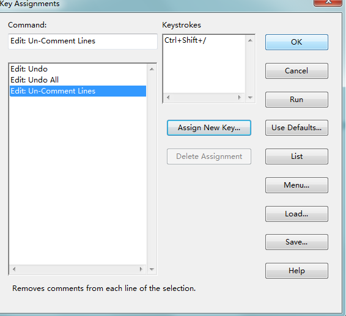

si 添加多行注释
Source insight 4.0 已经内置了多行注释和反注释, ctrl+/ , ctrl+shift+/

点击 Project --> open project --> 选择Base，添加代码后再次选择打开项目，选择你之前建立的工程项目，打开。
然后点击 Option --> key Assignments --> 找到新添加的名字，例MultiLineComment，后点击Assign New Key，如下图所示
多行注释，ctrl+\ 也可删除
在文件末尾添加如下代码：
macro MultiLineComment()
{
hwnd = GetCurrentWnd()
selection = GetWndSel(hwnd)
LnFirst = GetWndSelLnFirst(hwnd) //取首行行号
LnLast = GetWndSelLnLast(hwnd) //取末行行号
hbuf = GetCurrentBuf()
if(GetBufLine(hbuf, 0) == "//magic-number:tph85666031"){
stop
}
Ln = Lnfirst
buf = GetBufLine(hbuf, Ln)
len = strlen(buf)
while(Ln <= Lnlast)
{
buf = GetBufLine(hbuf, Ln) //取Ln对应的行
if(buf == "")
{ //跳过空行
Ln = Ln + 1
continue
}
if(StrMid(buf, 0, 1) == "/")
{ //需要取消注释,防止只有单字符的行
if(StrMid(buf, 1, 2) == "*")
{
PutBufLine(hbuf, Ln, StrMid(buf, 2, Strlen(buf)))
}
}
if(StrMid(buf,0,1) != "/")
{ //需要添加注释
PutBufLine(hbuf, Ln, Cat("/*", buf))
}
Ln = Ln + 1
}
SetWndSel(hwnd, selection)
// 添加末尾注释
Ln = Lnfirst
buf = GetBufLine(hbuf, Ln)
len = strlen(buf)
while(Ln <= Lnlast)
{
buf = GetBufLine(hbuf, Ln) //取Ln对应的行
if(buf == "")
{ //跳过空行
Ln = Ln + 1
continue
}
if(StrMid(buf, Strlen(buf)-1, Strlen(buf)) == "/")
{ //需要取消注释,防止只有单字符的行
if(StrMid(buf, Strlen(buf)-2, Strlen(buf)-1) == "*")
{
PutBufLine(hbuf, Ln, StrMid(buf, 0, Strlen(buf)-2))
}
}
if(StrMid(buf,Strlen(buf)-1,Strlen(buf)) != "/")
{ //需要添加注释
PutBufLine(hbuf, Ln, Cat(buf, "*/"))
}
Ln = Ln + 1
}
SetWndSel(hwnd, selection)
}
- 1
- 2
- 3
- 4
- 5
- 6
- 7
- 8
- 9
- 10
- 11
- 12
- 13
- 14
- 15
- 16
- 17
- 18
- 19
- 20
- 21
- 22
- 23
- 24
- 25
- 26
- 27
- 28
- 29
- 30
- 31
- 32
- 33
- 34
- 35
- 36
- 37
- 38
- 39
- 40
- 41
- 42
- 43
- 44
- 45
- 46
- 47
- 48
- 49
- 50
- 51
- 52
- 53
- 54
- 55
- 56
- 57
- 58
- 59
- 60
- 61
- 62
- 63
- 64
- 65
- 66
- 67
- 68
- 69
- 70
- 71
- 72
- 73
- 74
- 1
- 2
- 3
- 4
- 5
- 6
- 7
- 8
- 9
- 10
- 11
- 12
- 13
- 14
- 15
- 16
- 17
- 18
- 19
- 20
- 21
- 22
- 23
- 24
- 25
- 26
- 27
- 28
- 29
- 30
- 31
- 32
- 33
- 34
- 35
- 36
- 37
- 38
- 39
- 40
- 41
- 42
- 43
- 44
- 45
- 46
- 47
- 48
- 49
- 50
- 51
- 52
- 53
- 54
- 55
- 56
- 57
- 58
- 59
- 60
- 61
- 62
- 63
- 64
- 65
- 66
- 67
- 68
- 69
- 70
- 71
- 72
- 73
- 74
添加#if 0 #endif
macro AddMacroComment()
{
hwnd=GetCurrentWnd()
sel=GetWndSel(hwnd)
lnFirst=GetWndSelLnFirst(hwnd)
lnLast=GetWndSelLnLast(hwnd)
hbuf=GetCurrentBuf()
if(LnFirst == 0) {
szIfStart = ""
}else{
szIfStart = GetBufLine(hbuf, LnFirst - 1)
}
szIfEnd = GetBufLine(hbuf, lnLast + 1)
if(szIfStart == "#if 0" && szIfEnd == "#endif") {
DelBufLine(hbuf, lnLast + 1)
DelBufLine(hbuf, lnFirst - 1)
sel.lnFirst = sel.lnFirst - 1
sel.lnLast = sel.lnLast - 1
}else{
InsBufLine(hbuf, lnFirst, "#if 0")
InsBufLine(hbuf, lnLast + 2, "#endif")
sel.lnFirst = sel.lnFirst + 1
sel.lnLast = sel.lnLast + 1
}
SetWndSel( hwnd, sel )
}